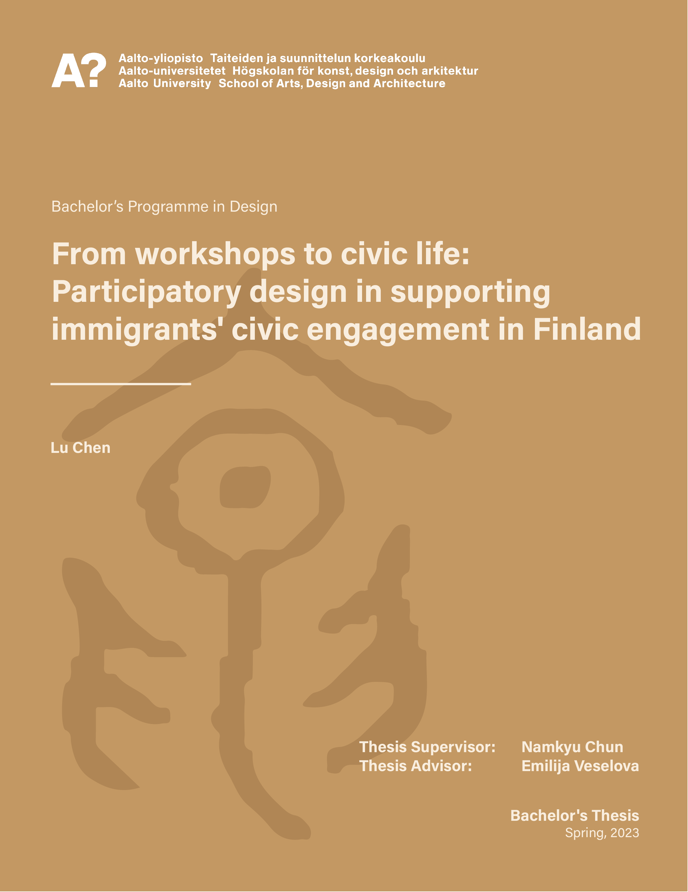
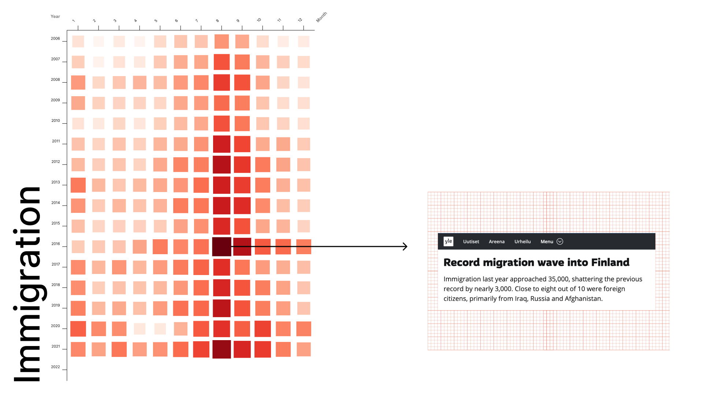
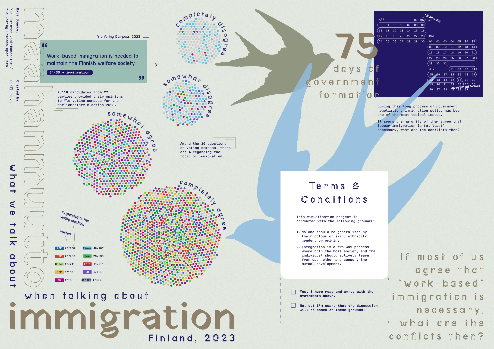
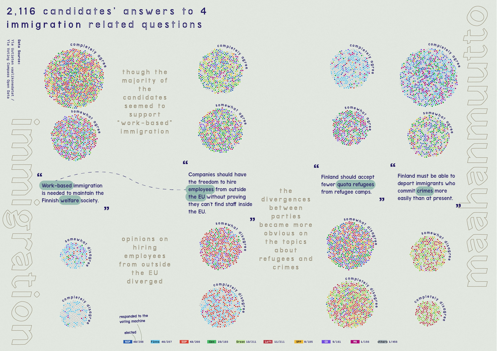
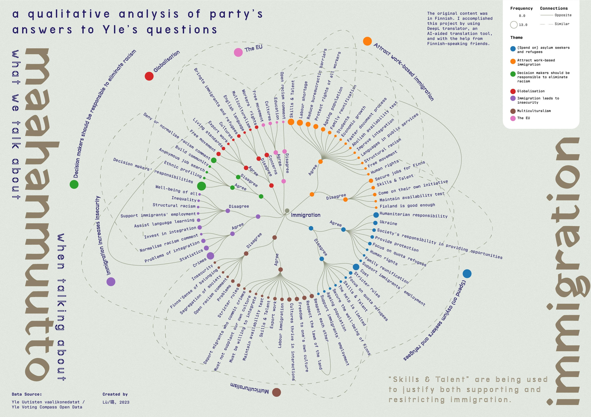

"Self-portrait, as well as a mindscape" (2020)
Fuzhou => Singapore => Kyiv => Istanbul => Helsinki
Lu / 璐 (Pinyin: Lù; “fine jade”)
I'm Lu, a designer and artist currently based in Helsinki. Before moving to Finland, I studied computing 🧑💻 and have worked as an interaction and UX designer in Singapore. Yet, I became interested in the less-visible part of design, the systems and their interactions outsides the digital interface. 🌱 With the interest in communities and services, I started pursuing my study in design and media at Aalto University.
Like the life in the tropics 🌴 and the Nordics 🌲, I'm intrigued by the connections between seemingly contrasting things. Through (design) practices, I explore the surrounding world, communicate the findings, and thus connect the loose parts together. For me, design is the reflection-in-action, a bridge between vita activa (active life 🙌) and vita contemplativa (comtemplative life 🧠).
I'm open for jobs in service design, design research, and any initiatives aligning with my practices and interests. If you'd like to get in touch, feel free to contact me through email 📥 chenlu.ciel@gmail.com or 🤝 LinkedIn Lu Chen
At the moment:
燕燕于飛 - Immigration, and Re-imaginations of (collective) identity (2022~2023)
During the spring of 2023, I completed my thesis about how participatory design might facilitate immigrants' civic engagement in Finland. By interviewing 8 designers who had experiences working with public agencies and participants with immigrant backgrounds, I acquired an overview about the applications of design in public service development, as well as designers' challenges. Link to the thesis: From Workshops to Civic Life: Participatory Design in Supporting Immigrants' Civic Engagement in Finland 
The interests in examining immigration through the lens of design started in 2021. During the autumn semester, I was working on a course project about designing advice services for Finnish expatriates (as the design brief described). The word "expatriate" intrigued me: who are expatriates? How are they different from "immigrants"? (Am I also an expatriate? But why do I never feel like identifying myself this way?)

A service map of the advice services for returning Finnish emigrants
Link to Figma prototype: Advice Services for Returnees
With these questions, I started to pay attention to the topic of immigration in the following projects during my study or in everyday life. For example, in an introductory course about Information Design, when I investigating a dataset about the monthly number of jobseekers and vacancies in the Healthcare sector in Finland, I noticed a possible link between jobseeking and the immigration: Something you may Care: data behind careworker in Finland (Autumn 2022)
Heatmap of immigration to Finland by month
While in the Information Design minor studies (2023), I tried to visualise election parties and candidates views on immigration on voting compass.



Past projects
* this section is under development
In September 2023, Jonna Eloranta, Zina Marpegan, and I hosted a collaborative drawing workshop for children and their families at Children's cultural centre Pessi in Vantaa for Kolibrí Festivaali.
- [Animation] Food Futures: Solving the Tragedy of Commons (Worked with ATARCA EU, Autumn 2022)
- [Serivce] Membership Services for Finnish Red Cross - Autumn 2021
- [Serivce] Advice Services for Returning Expatriates (Client: Suomi-Seura) - Autumn 2021
- [Interactive Installation] "Jam-Jam": Designing for Playing (and Telepathy) - Spring 2021
Other platforms
- Email: chenlu.ciel@gmail.com
- LinkedIn: Lu Chen (Design & Research)
- Prints and casual updates on projects: (Instagram) @lu.isanameof.gem
- Writings: Wind Eating Kioski
- Lens-based: Phography: conceptual & documentary